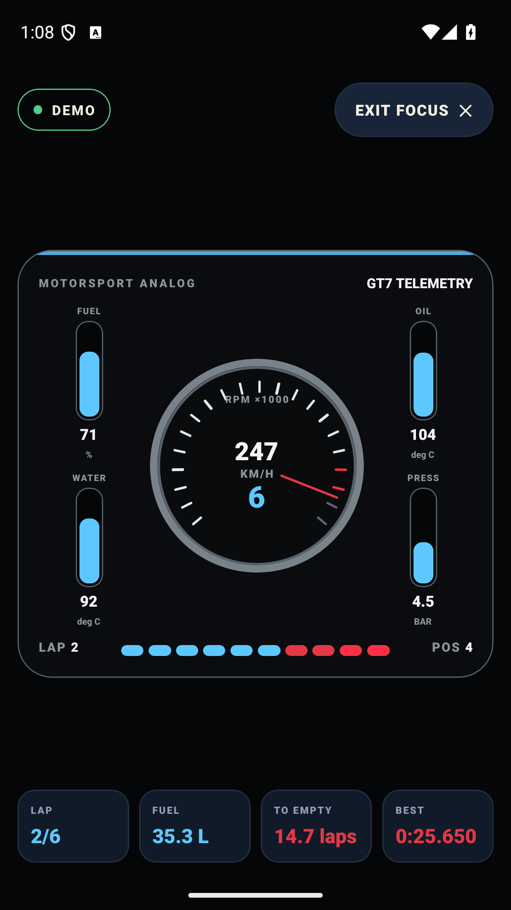
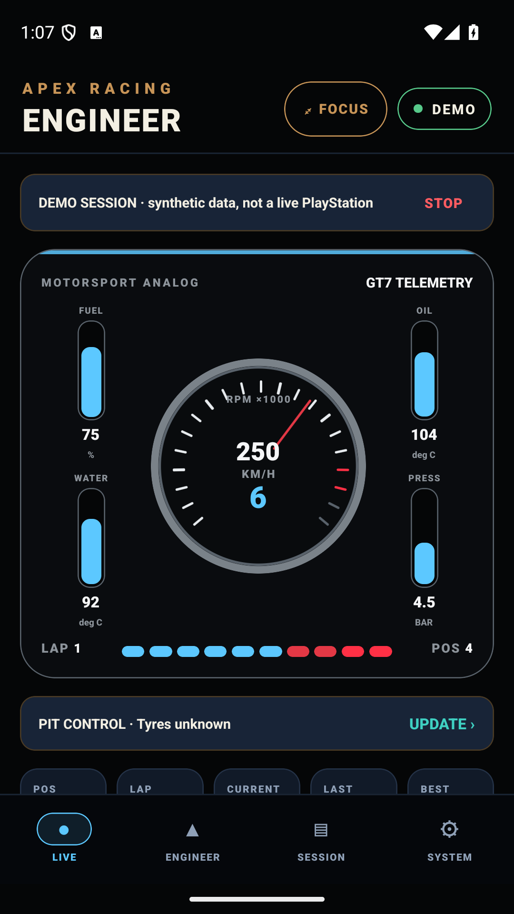
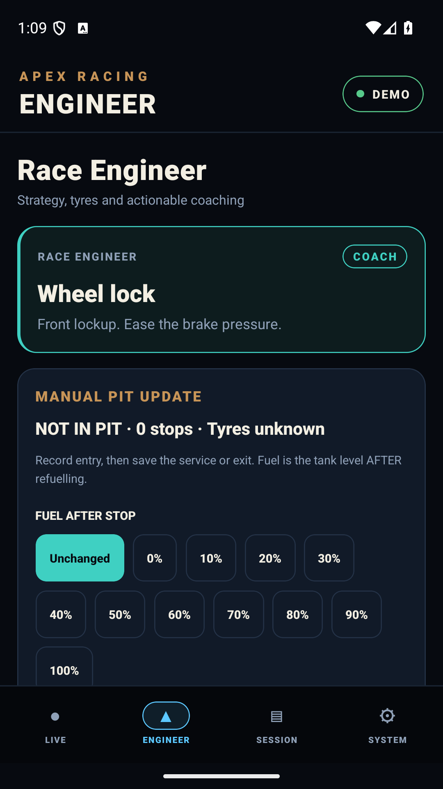
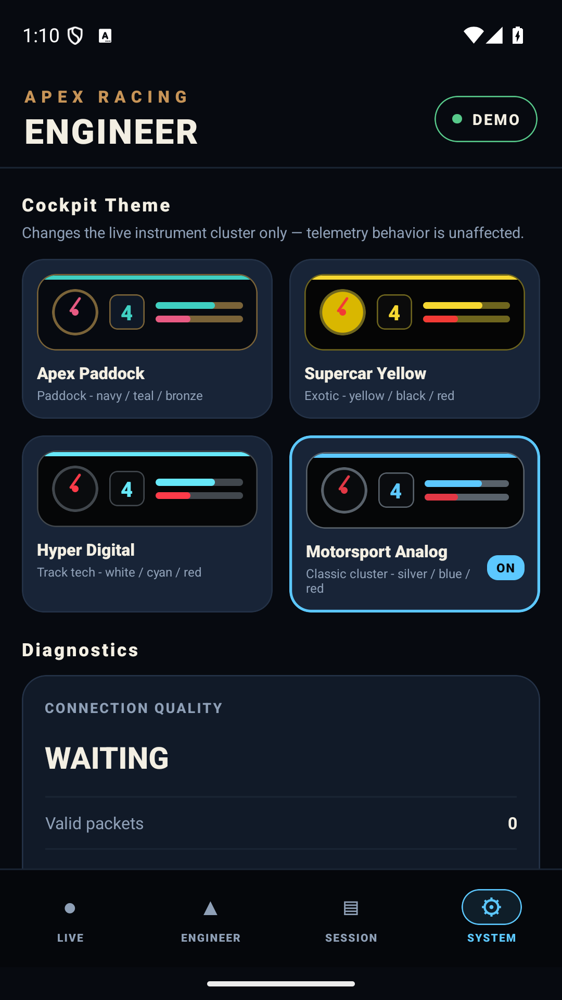

Live cockpit
Speed, RPM, gear, throttle, brake, tyres and timing in a distraction-reduced interface built for a quick glance.
YOUR RACE. YOUR DATA. YOUR ENGINEER.
A multi-title racing telemetry and race-engineer platform for live dashboards, fuel strategy, pit decisions, session replay and actionable engineer callouts.
Built for multiple racing titles · Version 1.0 launches with Gran Turismo 7 support on PlayStation · one-time purchase · no subscription

FROM THE ACTUAL APP
Real screenshots of APEX Racing Engineer running with the Motorsport Analog instrument skin. Captured on an Android emulator using the app's clearly labeled offline demo with simulated telemetry.



Tap any screenshot to view it at full resolution. Offline Demo displays simulated data; live driving telemetry requires a compatible PlayStation running GT7 on the same local network.
Speed, RPM, gear, throttle, brake, tyres and timing in a distraction-reduced interface built for a quick glance.
Fuel burn, laps-to-empty, pit-window projections and manual pit updates when the console cannot provide every detail.
Clear visual and spoken prompts driven by deterministic race logic — no account, cloud AI or subscription required.
Record live sessions locally, replay them later and keep your racing data on your own device.
LOCAL-FIRST BY DESIGN
Console telemetry and session recordings are processed locally. APEX Racing Engineer has no advertising or analytics. Optional feedback is sent only when you choose to submit it.
READY FOR THE NEXT STINT?